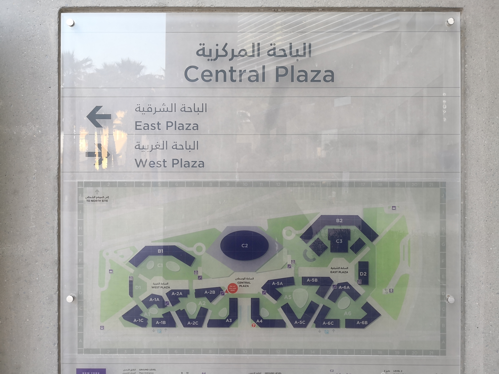

Maps are scattered around campus. They are all North-up oriented maps (i.e. North is on the top) but some are placed on walls facing north.
A north-up oriented map makes sense ONLY when placed on a wall facing south: in this case, the place and the map match and you see naturally North in front of you, South behind, West on the left and East on the right, hence you can use the map for effective navigation with little or no adjustment costs. When the map is hung on north facing walls it becomes a source of frustration as all indications are right-left mirrored.
The presence of these maps on North facing walls is problematic. Even more puzzling is to acknowledge that the designers where apparently aware of the issue. Their remediation efforts are in-your-face impossible arrows that in the attempt of correcting the mirrored map swap East and West. There is no informational free lunch.
A map placed on a South-facing wall would have not needed any extra information to function perfectly.
 NYU Abu Dhabi Campus, UAE